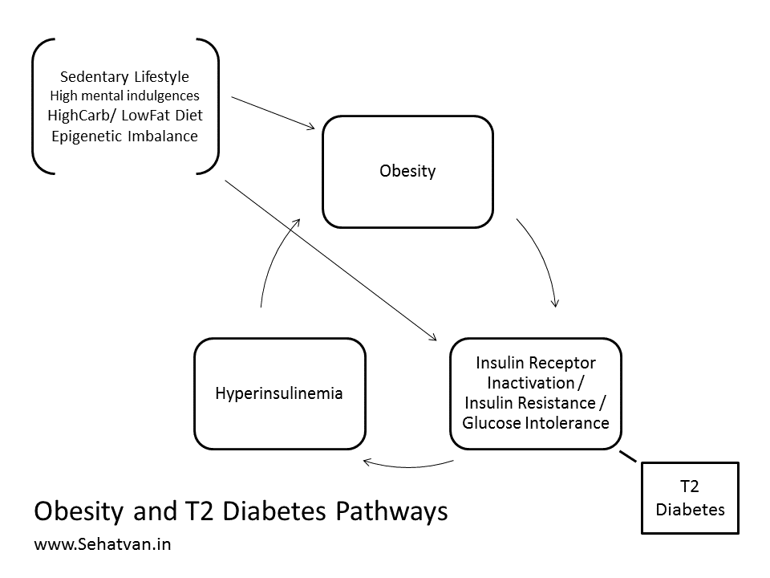
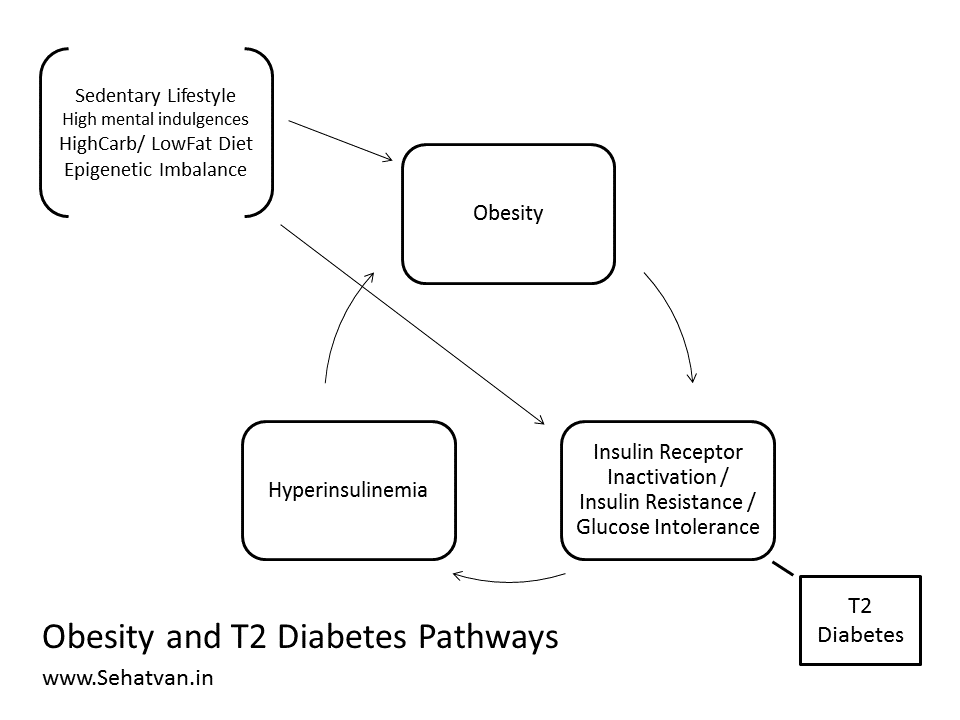

Take health, drop diseases
Namaste!
 Every living being is capable of self-recovery. Lifestyle issues weaken our health recover
capacity and our health-span.
Health-span is the period in a person's life without major illnesses.
Sehatvan Aashram is carefully designed to reboot mental and physical fitness.
Every living being is capable of self-recovery. Lifestyle issues weaken our health recover
capacity and our health-span.
Health-span is the period in a person's life without major illnesses.
Sehatvan Aashram is carefully designed to reboot mental and physical fitness.
Forest Therapy Module:
Diabetes, Thyroidism & Obesity
Recommended Duration:
A)At Sehatvan(Forest Protocol): 10 to 20 days
+
B)Home Protocol: 3 to 4 weeks (1 or 2 followup visits/calls)
Fee Contribution:
Indian Participants:
Rs 20,000
International Participants:
USD 350
Refund Policy:
Cancellation (only upto first 2 days of participation)
Rs. 5000/person is deducted and the balance is refunded.
Change of date:
subject to availability and updated fees.
Know More
What is T2 Diabetes, Thyroidism and Obesity?
Past Experience
T2 Diabetes, Thyroidism and Obesity are highly interlinked diseases involving lifestyle
connected endocrine malfunctioning caused by sedentary living, high mental indulgences, high
carbohydrate and low fat diet, and epigenetic imbalances. Thyroidism has a connection with
iodine too; earlier most hypothyroidism cases occurred due to iodine deficiency and now most
are being caused by iodine excess.

Lifestyle factors leading to obesity often cause insulin-resistance, which leads to over production of insulin or hyper-insulinemia, which then further enhances obesity; and hence, a person suffering from obesity is often trapped in this cycle of insulin-resistance and hyper-insulinemia. In most cases this also precipitates in the form of glucose intolerance or T2 Diabetes. In small number of people lifestyle factors and epigenetic imbalance cause T2 Diabetes without involving obesity.

Lifestyle factors leading to obesity often cause insulin-resistance, which leads to over production of insulin or hyper-insulinemia, which then further enhances obesity; and hence, a person suffering from obesity is often trapped in this cycle of insulin-resistance and hyper-insulinemia. In most cases this also precipitates in the form of glucose intolerance or T2 Diabetes. In small number of people lifestyle factors and epigenetic imbalance cause T2 Diabetes without involving obesity.
At Sehatvan we have almost always been successful in helping people come out of the DTO trap and
live a medicine-free healthy life.
Therapeutic Protocol
Protocol developed at Sehatvan involves a 10-20 days long forest component and 3-4 weeks long
supplementary home component.
Forest Protocol
Forest Protocol is comprised of 3 steps:
Home Protocol
-
1. Epigenetic balancing (5 days): Our body’s structure and functionality is encoded in
our genes or DNA. Over and above this encoding, there exists a switching mechanism which
controls the expression of each gene. This switching machine is known as epigenome and
is responsive to lifestyle factors and the environment we live in. This mechanism is
hundreds or thousands or millions of years old and still tuned to the wild setting and
living that existed for most part of human history excepting the past few decades of
rapid modernization. Hence, going back to the wild and hunter gatherer kind of living
quickly reboots the epigenome and fine tunes our genetic expressions. At Sehatvan this
is achieved by:
- Avoiding all mental stimulations and indulgences including Tea/ Coffee, Newspapaer, Phone, Books, Music, Non-essential conversations, Yoga & Meditation
- Soaking in with Sun, Soil and Space in a wild setting and doing a lot of hard physical labor
- Autophagic Cleansing and Rejuvenation (5-10 days): Authophagy is a surprising biological tool that can lead to super cleansing of body and mind followed by their rejuvenation. Since this involves detox, persons may experience vivid symptoms ranging from fever to diarrhea or vomiting to skin rashes depending upon the toxicities stored in them, and hence, autophagy should never be attempted in a city like toxic or non-supportive environment. This should be treated as a major intervention in one’s life and taken only in a pristine and supportive environment. At Sehatvan we recommend water only fasting and mild physical labor during this phase.
- Re-strengthening (5 days): Rushing back to the food and toxic environment immediately after the autophagy phase is a horrible idea. It should be stepped-in in a gradual manner; and hence, one must spend a few more days in a supportive and a pristine environment before moving back to the city. This is a called re-strengthening phase, and under this people return back to a healthy diet in a gradual manner. Also, physical activities are enhanced from mild to moderate to make-up for any muscle loss.
Ultimately people got to live in cities as neither forest can afford internalizing many people,
nor most people can afford living in a forest; hence, how-so-ever toxic they may be, cities are
the realities. Following a non-sedentary, low-toxicity lifestyle for next 3-4 weeks further
boosts the reversal of DTO.
Daily/ Hourly Protocols
Protocol for the first 10 days is standard for everyone and is available at www.sehatvan.in in
the form of a booklet. Subsequent protocols are tailor made to each individual’s needs and
situations.
Please send an email to sehatvan@gmail.com to receive.
PRECAUTION
Please send an email to sehatvan@gmail.com to receive.
The protocol should be undertaken only under medical supervision as people under medication
require continuous dosage adjustments. Also, those carrying toxicities may experience detox
symptoms like vomiting, diarrhea, skin rashes, body ache, fever etc during autophagy phase.
Other Questions
What is Forest Therapy?
 This is a healing process based on strengthening and calming, cleansing and rejuvenating the
body. It
helps in
rebooting the self-recovery system and also facilitates reversing of diseases.
This is a healing process based on strengthening and calming, cleansing and rejuvenating the
body. It
helps in
rebooting the self-recovery system and also facilitates reversing of diseases.

This is a healing process based on strengthening and calming, cleansing and rejuvenating the
body. It
helps in
rebooting the self-recovery system and also facilitates reversing of diseases.
Who can do it?
This programme is suitable for healthy people as well as those suffering from diseases.
Healthy
people can benefit by increasing their stamina and health-span while people suffering from
ailments can reverse their diseases.
Who cannot do this?
Those who need constant medical attention, who have difficulty in walking and do not enjoy
doing
their own work.
Which diseases is the process helpful in?
Diabetes, BP(Hypertension), Heart issues, Stress, Thyroid, Obesity(weight-loss),
Cancer(early stage
& prevention), PCOD and other lifestyle and autoimmune diseases.
What is the procedure? How long does it take?
This process of Forest Therapy has been developed by health scientist Dr. Vipin Gupta and is
based on
CNA (Community-living, Nature and Autophagy) which can be done at Sehatvan. The duration
progresses
differently for everyone, based on your current health and healing ability.
About Dr. Vipin Gupta

A drug discovery scientist, he spent over two decades developing new medicines for various pharma companies in India, Europe and America. In 2011 he was invited by The Royal Swedish Academy of Sciences at Nobel Museum, Stockholm to represent Southeast Asia. He co-founded a research publishing company ‘Inventi’ in 2010 and a self-healing space ‘Sehatvan’ in 2016.
A drug discovery scientist, he spent over two decades developing new medicines for various pharma companies in India, Europe and America. In 2011 he was invited by The Royal Swedish Academy of Sciences at Nobel Museum, Stockholm to represent Southeast Asia. He co-founded a research publishing company ‘Inventi’ in 2010 and a self-healing space ‘Sehatvan’ in 2016.
‘Sahaj Sehat’ series carries the viewpoints of how body’s auto-repair capabilities can make use of medicines redundant in lifestyle diseases.